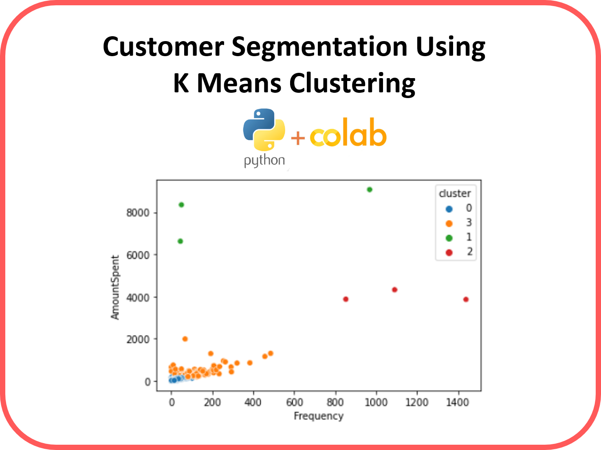

Customer Segmentation
- C#
- Asp.net
- Rest Api
- Javascript
- SQL

Overview
Customer Segmentation is the subdivision of a market into discrete customer groups that share similar characteristics. Customer Segmentation can be a powerful means to identify unsatisfied customer needs. Using the above data companies can then outperform the competition by developing uniquely appealing products and services.
The most common ways in which businesses segment their customer base are:
- Demographic information, such as gender, age, familial and marital status, income, education, and occupation.
- Geographical information, which differs depending on the scope of the company. For localized businesses, this info might pertain to specific towns or counties. For larger companies, it might mean a customer’s city, state, or even country of residence.
- Psychographics, such as social class, lifestyle, and personality traits.
- Behavioral data, such as spending and consumption habits, product/service usage, and desired benefits.
How it Works
K Means Clustering Algorithm
- Specify number of clusters K.
- Initialize centroids by first shuffling the dataset and then randomly selecting K data points for the centroids without replacement.
- Keep iterating until there is no change to the centroids. i.e assignment of data points to clusters isn’t changing.
Environment and tools
- scikit-learn
- seaborn
- numpy
- pandas
- matplotlib